Assignment - Data Link Layer
1. Theoretical part
1.1. Ethernet standards for physical layer, Ethernet limits, Ethernet frame
- Ethernet standards for physical layer: Rules that define how data is transmitted over physical cables (e.g., 10BASE-T, 100BASE-TX, 1000BASE-T dictate speed and cable types).
- Ethernet limits: Physical constraints, primarily cable length; for example, standard twisted-pair copper cables are limited to 100 meters before the signal degrades.
- Ethernet frame: The data packet at the Data Link Layer, containing the source and destination MAC addresses, the data payload, and an error-checking sequence (FCS).
1.2. MAC address, broadcasting
- MAC address: A unique 48-bit hardware identifier assigned to a network adapter by the manufacturer.
- Broadcasting: The process of sending a single message to all devices on a local network simultaneously, using a special broadcast address (FF:FF:FF:FF:FF:FF).
1.3. The difference between hub, switch, and router
- Hub: A basic Layer 1 device that receives data on one port and blindly repeats it to all other ports, causing unnecessary traffic.
- Switch: A smart Layer 2 device that learns the MAC addresses of connected devices and forwards data only to the specific port where the destination is located.
- Router: A Layer 3 device that connects completely different networks together and forwards traffic based on IP addresses.
1.4. CSMA/CD, collision, half and full duplex
- CSMA/CD: (Carrier Sense Multiple Access with Collision Detection) A protocol used in older Ethernet networks to manage shared cables and avoid data crashes.
- Collision: Occurs when two devices transmit data on the same shared medium at the exact same time, corrupting the signal.
- Half duplex: A communication mode where devices can send or receive data, but not at the same time.
- Full duplex: A communication mode where devices can send and receive simultaneously on separate wire pairs, completely eliminating collisions.
1.5. ARP request, detecting doubled IP address
- ARP request: A network message that asks "Who has this IP address?" in order to find the corresponding physical MAC address.
- Detecting doubled IP address: Done by sending a "Gratuitous ARP" for the device's own IP when it connects; if another machine replies, a duplicated IP address conflict is detected.
1.6. BOOTP, DHCP
- BOOTP: An older network protocol that allowed devices to automatically obtain an IP address during the boot process.
- DHCP: (Dynamic Host Configuration Protocol) The modern evolution of BOOTP that dynamically leases IP addresses from a pool and automatically provides other settings like the default gateway.
1.7. VLANs
- VLANs: (Virtual Local Area Networks) A technology that logically divides a single physical switch into multiple isolated networks, improving security and reducing broadcast traffic.
2. Practical part
2.1. Find your MAC address using ipconfig, and the MAC address of your default gateway using Wireshark.
Using ipconfig /all, the local adapter's MAC address (88-F4-DA-DE-AF-5D) and the default gateway IPv4 address (10.239.192.1) were identified. Capturing an ICMP echo reply from the gateway in Wireshark revealed its corresponding physical address (00:fe:ed:c0:ff:ee).
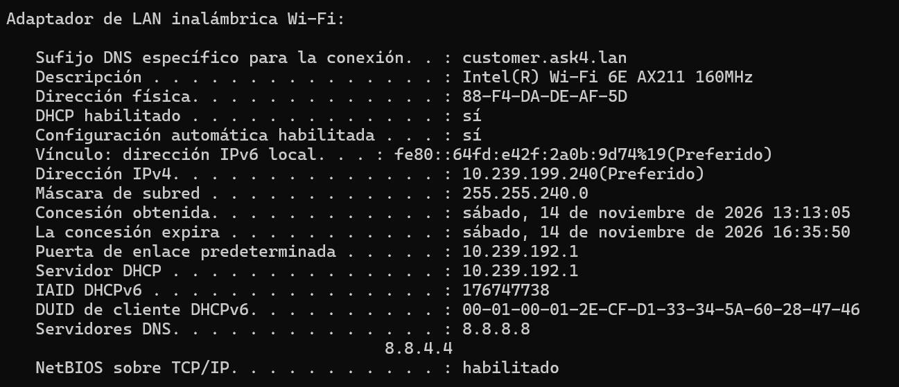
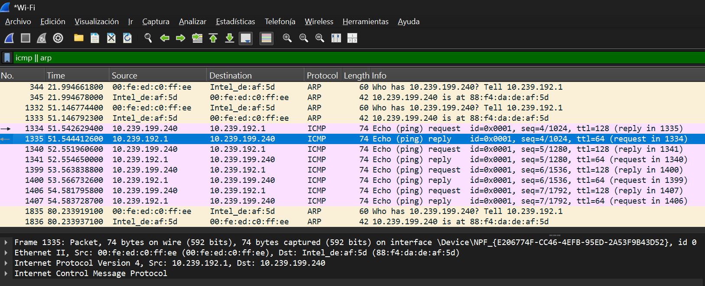
2.2. Find the producer of your network adapter.
Looking up the MAC address OUI prefix (88:F4:DA) in the Wireshark OUI database identified the network adapter producer as Intel Corporate
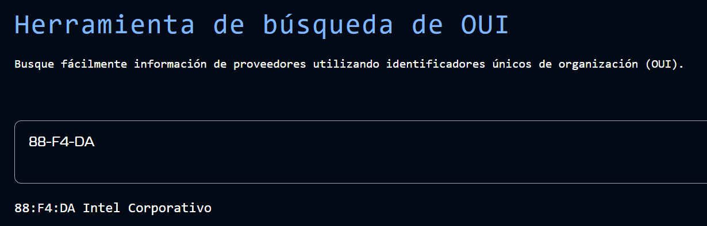
2.3. Flush the ARP cache.
The ARP cache for interface 10.239.199.240 was inspected with arp -a, flushed using arp -d * 10.239.199.240, and verified again with arp -a to confirm the removal of dynamic entries.
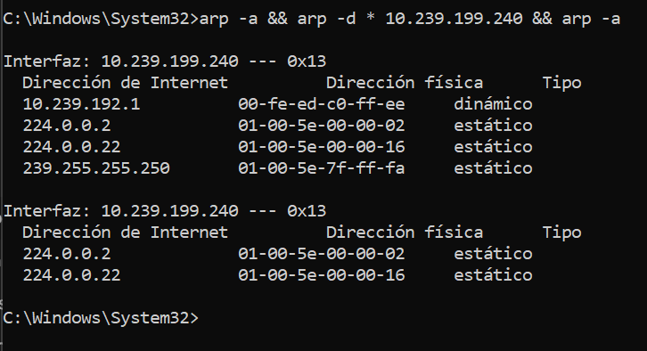
2.4. Set the same IP address on two different hosts in the lab and detect it using an ARP request.
When assigning 10.199.46.124 to the laptop while another host already held that address, the laptop sent an ARP Probe (packet 2623) and received an ARP reply from 26:e6:60:42:33:fe. Detecting the duplicate IP conflict, Windows aborted the assignment and fell back to an APIPA address (169.254.128.58).
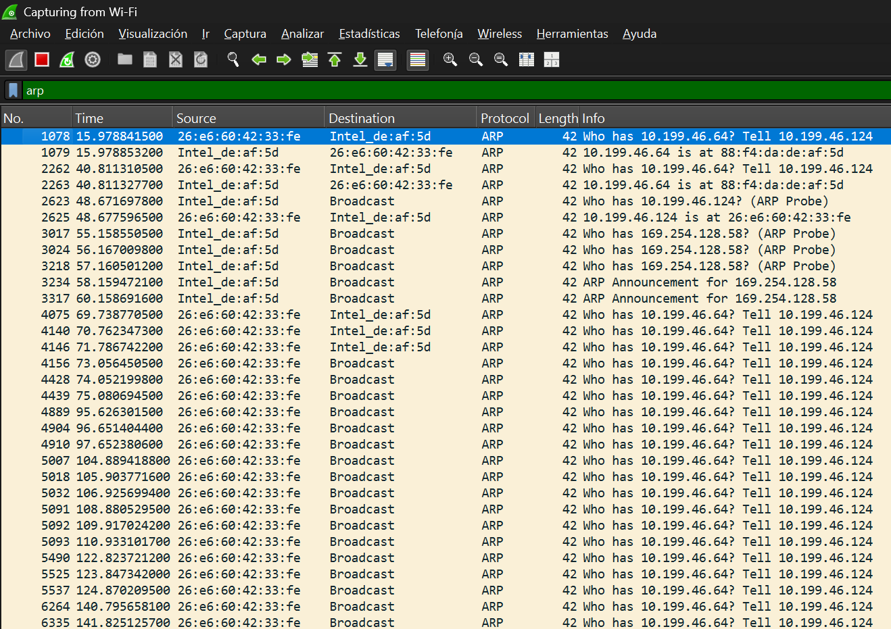
2.5. Using Wireshark, save the packets required to obtain an IP address through DHCP.
DHCP traffic was captured in Wireshark using the dhcp display filter. The four-packet DORA sequence (Discover, Offer, Request, and ACK) required to obtain the IPv4 lease was isolated.
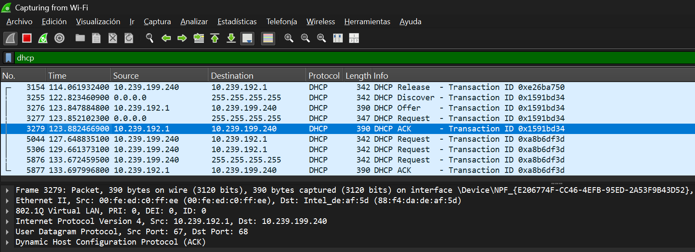
2.6. Release and renew your IP address using ipconfig.
The active DHCP lease was released using ipconfig /release, clearing the Wi-Fi adapter's IPv4 configuration, and subsequently renewed via ipconfig /renew to obtain 10.239.199.240.
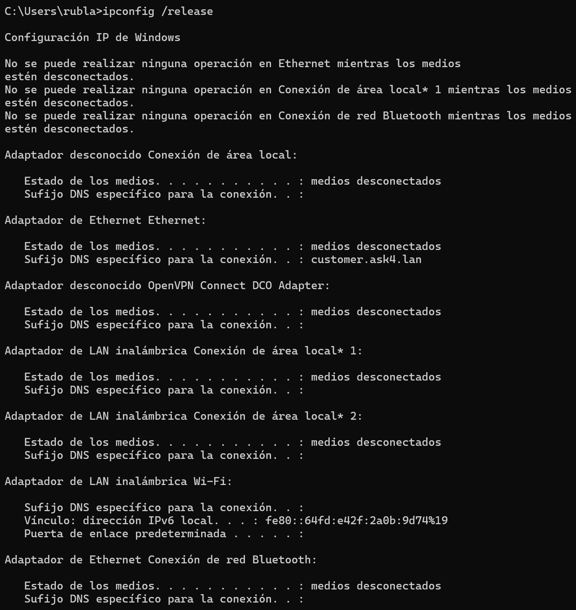
ipconfig /release.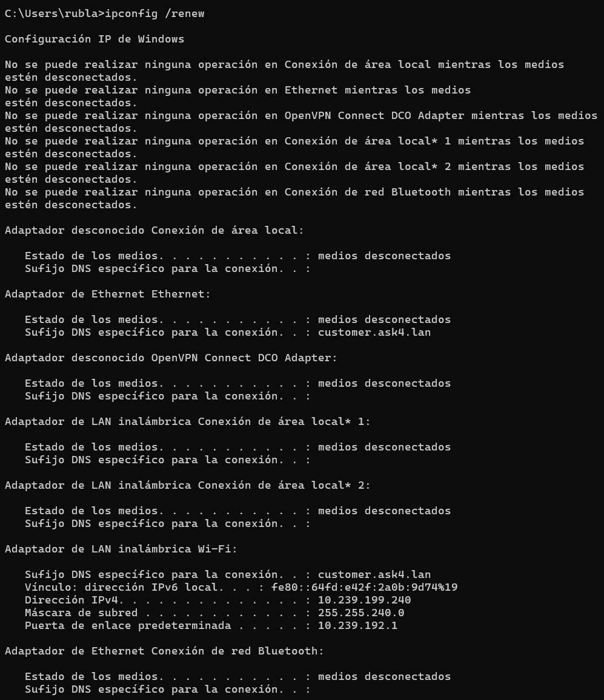
ipconfig /renew.2.7. Change the MAC address of a computer in the lab to the same as the MAC address of another computer in the lab and verify the IP address obtained.
First, the physical address (de:60:5e:65:75:62) and active IPv4 lease (10.239.198.166) of a second host on the same Wi-Fi network were recorded, after which its wireless interface was disconnected to avoid layer-2 address collisions.
Next, the laptop's Intel Wi-Fi 6E AX211 adapter MAC address was modified via PowerShell registry configuration (NetworkAddress = DE605E657562) and the interface was restarted.
Finally, running ipconfig /all verified that the adapter adopted the cloned MAC address (DE-60-5E-65-75-62) and that the DHCP server (10.239.192.1) assigned the exact same IPv4 address (10.239.198.166), as DHCP lease tables bind IP assignments to the client's hardware MAC address.
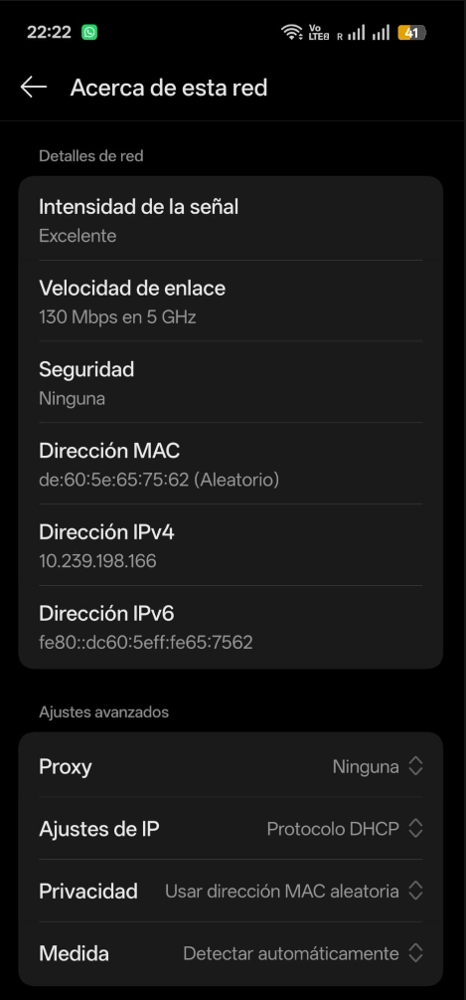
de:60:5e:65:75:62) and assigned IPv4 lease (10.239.198.166) of the second host before disconnecting it from the network.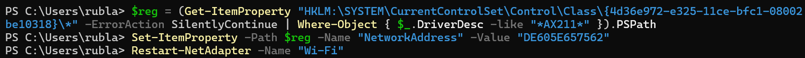
DE605E657562) on the Intel Wi-Fi 6E AX211 adapter and restart the interface.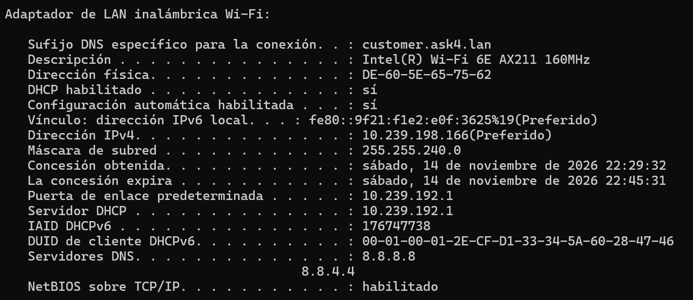
ipconfig /all showing the physical address (DE-60-5E-65-75-62) and the identical IPv4 lease (10.239.198.166) obtained from the DHCP server.